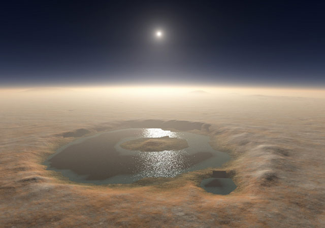
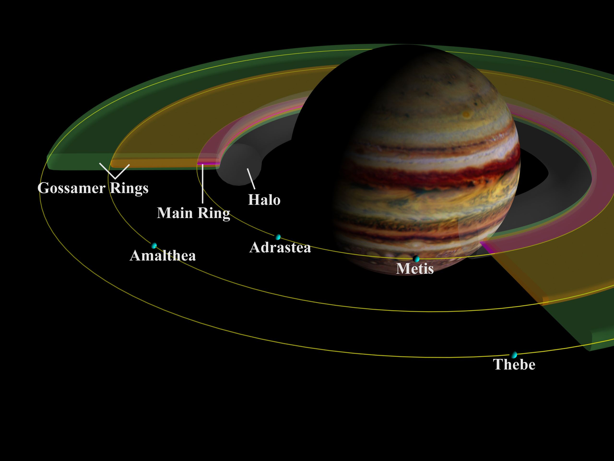
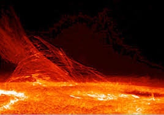
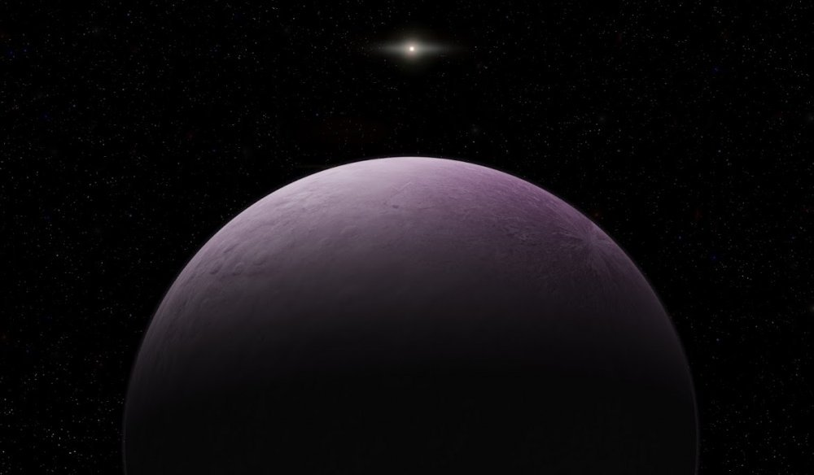
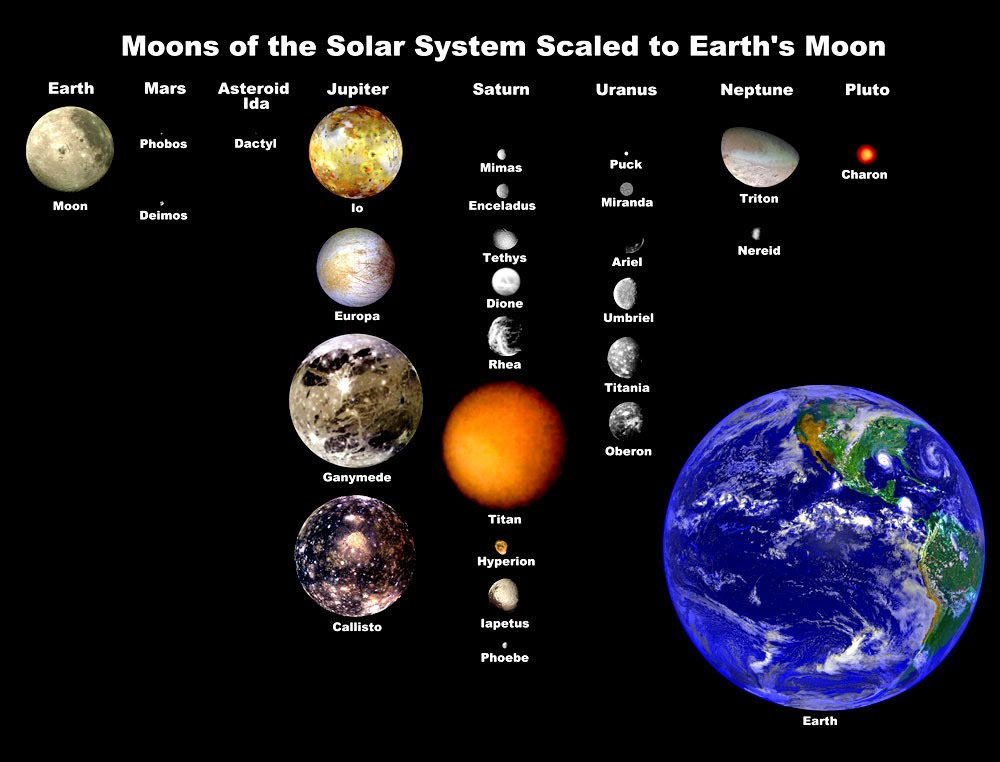
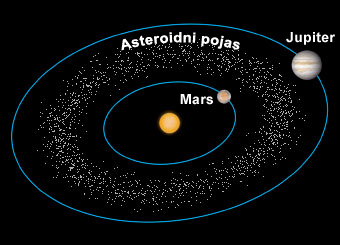
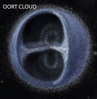

Istraživači su pronašli dokaz da postoji tekuća voda na Marsu. Do otkrića se došlo koristeći Marsis, radar na letjelici Mars Express. Područje vode podsjeća na jezero i nalazi se ispod površine. S obzirom da je okoliš Marsa neprijateljski za razvoj života nagađa se da se, ukoliko život na tom planetu i postoji, razvija ispod površine. Kako piše BBC Marisis nije mogao detektirati kolika je dubina 'jezera' koje je otkriveno, ali se... Kategorija: Marspoveznica na članak
Jupiterovi prstenovi

Jupiterovi prstenovi su sistem prstenova planete Jupiter. Ovo je treći otkriveni sistem prstenova u Sunčevom sistemu, nakon Saturnovog i Uranovog. Prsteni su prvi put primećeni 1979. od strane svemirske sonde Vojadžer 1, a temeljno su istarženi od sonde Galileo 1990. Takođe se istražuju i od strane.... Kategorija: Jupiterpoveznica na članak
Prvi čovijek na Mjesecu
Apollo 11 je bila svemirska misija koja je 20. srpnja 1969. dovela prve ljude na Mjesec. Svemirski let, kojeg su provele Sjedinjene Države, smatra se velikim postignućem u povijesti istraživanja i predstavlja pobjedu SAD-a u hladnoratovskoj svemirskoj utrci sa Sovjetskim Savezom.Lansirana je s Floride 16. srpnja, kao treća lunarna misija NASA-inog programa Apollo (i prva misija G vrste), s posadom u sastavu... Kategorija: Zemljapoveznica na članak
Koliko je sunce zapravo toplo?

Sunce je najveći izvor toplinske energije na čijoj površini vlada temperatura od 5 778 K (5 505 °C), a u unutrašnjosti se penje na milijune stupnjeva. Svaki cm2 Zemljine površine na koju pada Sunčeva svjetlost okomito prima u minuti prosječno 1,94 cal, to jest 1,36 W/m2. Ta se količina topline zove Sunčeva ili solarna konstanta. Pri tome se misli na... Kategorija: Suncepoveznica na članak
Najudaljeniji planet od sunca?

Neptun, osmi i od Sunca najudaljeniji planet Sunčevog sustava. Nazvan po rimskom bogu mora, četvrti je najveći planet po promjeru i treći po masi koja je sedamnaest puta veća od Zemljine. Oko Sunca orbitira na prosječnoj udaljenosti od 30,1 AJ. Astronomski simbol mu je... Kategorija: Neptunpoveznica na članak
Veličina sunca
Sunce je zvijezda u centru našeg Sunčevog sustava. Ona je gotovo savršena kugla (razlika između ekvatora i pola je samo 10 km) i sastoji se od plinovite vruće plazme, koja je isprepletena s magnetskim poljima.[1][2] Promjer mu je oko 1 392 000 km, što je za 109 puta više od Zemlje i masu oko 2 ∙ 1030 kilograma, što je za 330 000 puta više od Zemlje, a to je 99,86 % mase cijelog Sunčevog sustava.[3] Sunčev je obujam... Kategorija: Suncepoveznica na članak
Sateliti planeta

U našem planetarnom sustavu Merkur i Venera nemaju prirodnih satelita, Zemlja ima razmjerno velik satelit Mjesec (dok neki smatraju da ima i vise satelita), a Mars dva mala satelita. Slijede plinoviti divovi okruženi mnoštvom satelita: Jupiter, Saturn, Uran i Neptun. Pluton i njegov pratilac Haron ponekad se... Kategorija: Ostalopoveznica na članak
Kuiperov pojas

Kuiperov pojas je područje Sunčeva sustava na udaljenosti između 30 i 55 astronomskih jedinica od Sunca. U pojasu se nalaze Pluton, Haumea, Iksion, Kvaoar, Makemake, Ork i uglavnom manja ledena tijela. Prvo nakon Plutona otkriveno je 1992., a do danas ih je poznato više od tisuću. Smatra se da... Kategorija: Ostalopoveznica na članak
Oortov oblak

Oortov oblak je pretpostavljeni oblak koji čine kometi i slična tijela okružujući Sunce na udaljenosti do trećine udaljenosti najbližih zvijezda. Jan Hendrik Oort je 1950. pretpostavio da taj oblak u obliku sferne ljuske čini svojevrsnu granicu Sunčeva sustava. U ravnini ekliptike u njem se ističe nešto gušći prsten s većim brojem kometa. Najgušći je na udaljenosti od... Kategorija: Ostalopoveznica na članak